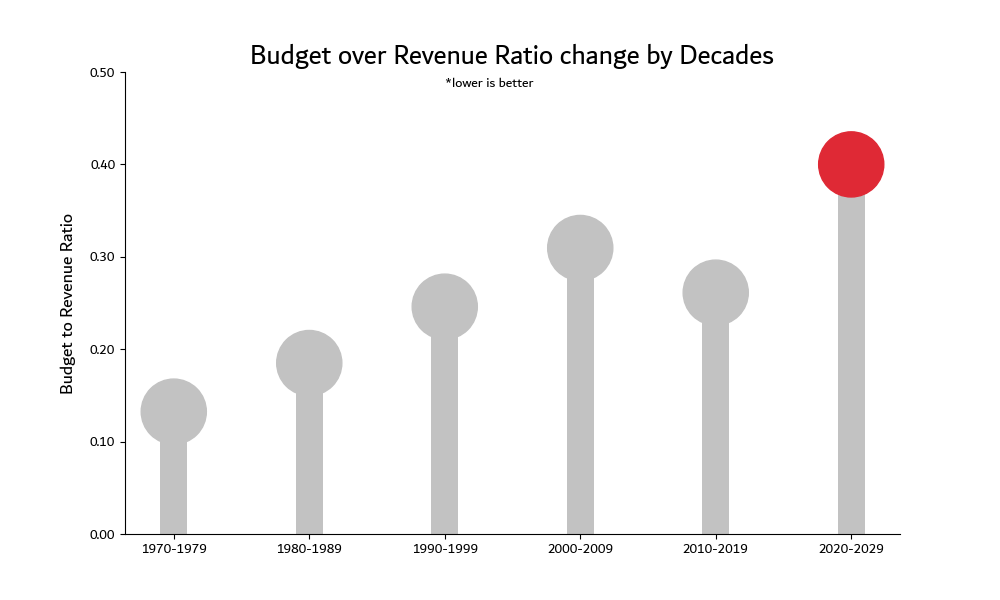
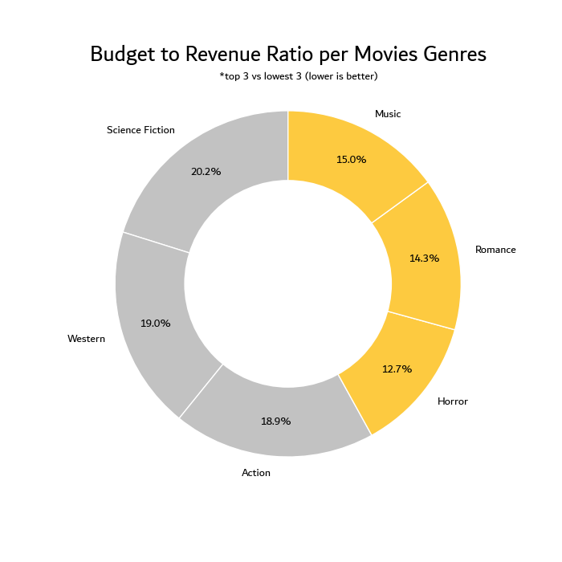
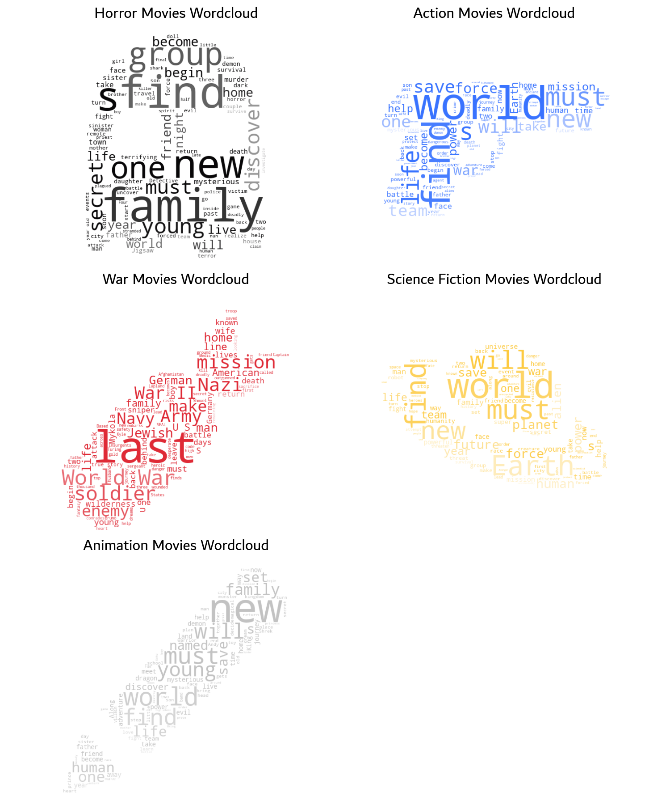
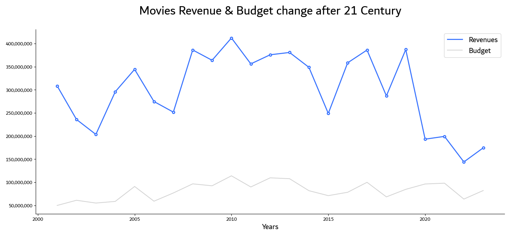
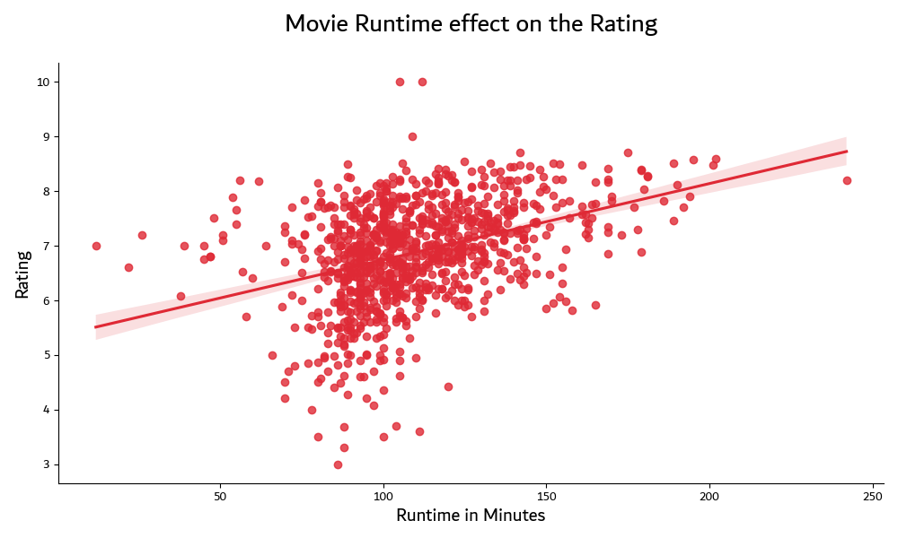

Howdy, this is an analysis for the movies market to how and identify the movies and production companies trends
so the movies lovers can know more about the thing they love.
Table of contents:
| Questions I have asked. |
Here |
| Answering movies questions. |
Here |
| Extra conclusions & summary. |
Here |
| See more. |
Here |
Questions I have asked:
To ask those questions I have tryed my best to use data analytics
SMART mehtod (Specific, Measurable, Action-oriented, Relevant & Time bound)
So they can give us more accurate & relevant answers and here are all of the project questions (even the ones those wasn't answered in this report) we will answer only here the
first five questions:
- Ratio change between Budget & Revenue each decade.
- Ratio change between Budget & Revenue per each genere.
- What are the most common words in movies overview per each of the top 3 popular genres. *(Just because it looks cool)
- How does the revenue & the budget correlate after 21 century.
- How much does the runtime of a movie correlate with it's rating.
- Change of the budget and rating by years.
- What are the top 10 movies in revenues before the 21 century.
- Does the rating of the movie affect it's popularity.
- What are the average movies ratings for the top 10 sized production companies.
-
Answering Freelance questions:
Now let's start with the
First question is what is ratio change between the budget over the revenue per decades
so we can know how is the movies market change and I found pretty
shocking result and here's it:

we can easly identify that there's a linear trend between the time and the ratio between budget and revenue, so what does this mean?
this mans that the production companies now are
greedy & risky by time so they try to maximize their
budgets to earn more revenues they may be getting high revenues but the half of this revenues is for the budget wheres the old movies
had the budget about only the fifth of thier revenues.
The second question is pretty similar to the first one which was asking about ratio change between the budget over the revenue for
each gernre which will make us understand which movie genre costs the cheapest buget compared to it's revenue:

Oh we see that the
Horror movies are cheaper to produce but higher in revenues Wheres the
Science fiction movies has about double budget
to revenue ratio which mean
higher budget for less revenue.
And here's the most useless question the
third one which asks 'What are the most common words in movies overview per each of the top 3 popular genres'
which only looks cool but it will not help us get any insight and it's good to impress anyone and here's this data gem:

Wow it looks really cool right don't regret i worked a full day for such a useless thing but still looks
COOL.
Now with the
fourth question awnsering how does the revenue & the budget correlate after the 21 century this question will help us see
the current trends in movies revenues and budgets and now let's look at it:

We can spot that in the last three years the revenues are under the average but that because that the newer movies need to take more time
to show thier real revenues anyway we can find many peacks and drops in the chart that's only because some outliers but in general we can
find a that it looks like a smooth bell distrbution which means that older movies had
lower revenues and the ones in the middle had
good revenues and now they have low revenues because the reason above.
Finally with the
last question which asks how much does the runtime of a movie correlate with it's rating
which was origanilly asked to discover any wierd trend and unexpectedly I found a one and here's it:

I know it needs time to understand but anyway i will explain this viz we can find that the movies longer than
120 mins usually gets higher
ratings than shorter ones that's because usually when somebody knows that the movie is long he won't watch it except if he liked the movie
from what did he hear about it before so the longer movies have higher rating just because people who saw it was
semi sure that they will
like it.
Conclusions & Summary:
after all of this mothful analysis I finally proofed many movies market hypothesises in this report or in the other dashboards and found many insights like:
- Science fiction movies are getting semi sure and horror movies count are increasing because budget to revenue ratio are highe in the science fiction movies.
- Movies in the past had higher budget to revenue ratio but they didn't this kind of crazy reveneus and anomolies like now.
- Movie sucess sometimes is unpredictable so there are many outliers every where.
See more:
Credits:
I used those images below to mask my wordcloud: